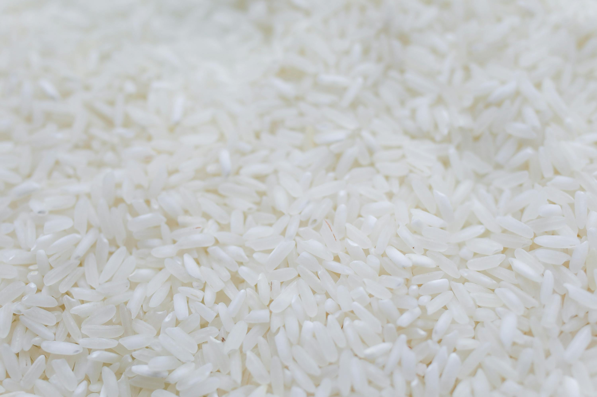
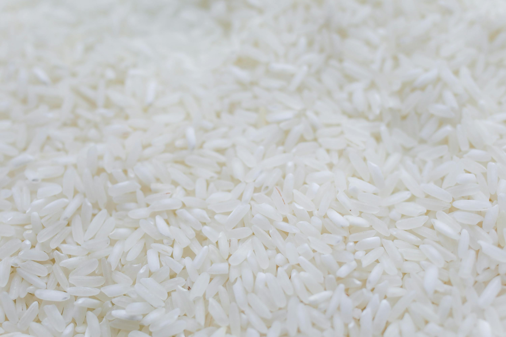

Carbohydrates
- Banana
- Berries
- white rice
- whole grain pasta
- quinoa
 

Carbohydrates are essential for providing energy to the body. They are broken down into glucose, which is the primary fuel for the brain and muscles during physical activity. Consuming an adequate amount of carbohydrates ensures that the body has enough energy to perform daily tasks and maintain overall health.
In addition to providing energy, carbohydrates also play a crucial role in maintaining proper digestive health. Foods rich in fiber, a type of carbohydrate, help regulate bowel movements and prevent constipation. Including a variety of carbohydrate sources in your diet can contribute to a balanced and nutritious eating plan.
protein
- Egg
- Cottage cheese
- tofu
- greek yoghurt
- lentils


Protein is essential for the growth and repair of tissues in the body. It plays a vital role in building muscles, producing enzymes and hormones, and supporting the immune system. Consuming adequate protein helps maintain muscle mass, especially during periods of weight loss or aging, and promotes overall physical strength and endurance.
In addition to its structural functions, protein also aids in various metabolic processes. It helps in the transportation of nutrients and oxygen throughout the body and assists in the regulation of bodily functions. Including a variety of protein sources in your diet ensures that you receive all the essential amino acids necessary for optimal health and well-being.
Vitamins
- fish
- beef
- pork
- avocadoes
- peas


Vitamins are essential micronutrients that play a crucial role in maintaining overall health and well-being. They are involved in numerous bodily functions, including the production of energy, the maintenance of healthy skin, and the proper functioning of the immune system. Each vitamin has specific roles; for example, vitamin C is important for collagen production and wound healing, while vitamin D helps in calcium absorption and bone health.
In addition to their individual functions, vitamins also act as antioxidants, protecting the body from damage caused by free radicals. This can help reduce the risk of chronic diseases such as heart disease and cancer. A balanced diet that includes a variety of vitamin-rich foods, such as fruits, vegetables, and lean proteins, ensures that the body receives the necessary nutrients to function optimally and maintain good health.
Fats
- cheese
- fatty fish
- dark chocolate
- whole eggs
- chia seeds


Fats are a vital component of a balanced diet, providing essential fatty acids that the body cannot produce on its own. These fatty acids are crucial for brain function, cell membrane structure, and the absorption of fat-soluble vitamins such as A, D, E, and K. Including healthy fats in your diet can help support cognitive function, improve mood, and promote overall mental well-being.
In addition to their role in brain health, fats also provide a concentrated source of energy. They help keep you feeling full and satisfied, which can aid in weight management by reducing the likelihood of overeating. Healthy fats, such as those found in avocados, nuts, and olive oil, can also support heart health by improving cholesterol levels and reducing inflammation. Incorporating a variety of healthy fats into your diet is essential for maintaining overall health and vitality.
Fiber
- oats
- raspberries
- lentils
- chicken peas
- almonds


Fiber is an essential component of a healthy diet, playing a crucial role in maintaining digestive health. It adds bulk to the stool, making it easier to pass and preventing constipation. A diet rich in fiber can help regulate bowel movements and reduce the risk of developing digestive disorders such as diverticulitis and irritable bowel syndrome. Additionally, fiber acts as a prebiotic, providing nourishment for beneficial gut bacteria, which in turn supports a healthy gut microbiome. This can enhance overall digestive function and improve nutrient absorption, contributing to better overall health.
Beyond its digestive benefits, fiber also plays a significant role in cardiovascular health. Soluble fiber, found in foods like oats, beans, and fruits, can help lower cholesterol levels by binding to cholesterol particles and removing them from the body. This can reduce the risk of heart disease and stroke. Furthermore, a high-fiber diet can aid in weight management by promoting a feeling of fullness and reducing overall calorie intake. Fiber-rich foods tend to be lower in calories and take longer to chew, which can help control appetite and prevent overeating. Incorporating a variety of fiber-rich foods into your diet is essential for maintaining a healthy heart, managing weight, and supporting overall well-being.
water


Water is essential for life and plays a critical role in maintaining overall health and well-being. It is involved in numerous bodily functions, including regulating body temperature, transporting nutrients and oxygen to cells, and removing waste products through urine and sweat. Staying adequately hydrated ensures that these processes function efficiently, helping to maintain homeostasis and prevent dehydration, which can lead to various health issues such as headaches, fatigue, and impaired cognitive function.
In addition to its physiological functions, water also supports digestive health by aiding in the breakdown and absorption of nutrients from food. It helps keep the digestive tract lubricated, preventing constipation and promoting regular bowel movements. Drinking enough water can also support weight management by promoting a feeling of fullness and reducing overall calorie intake. Incorporating an adequate amount of water into your daily routine is essential for maintaining optimal health and supporting the body's vital functions.